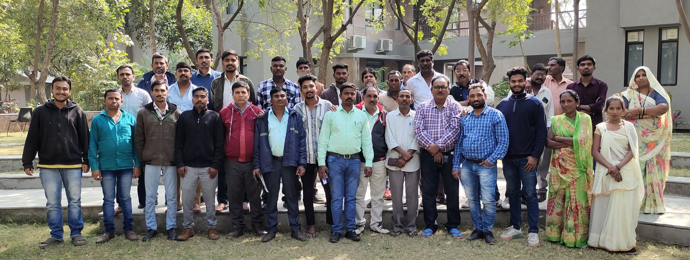

From a Janvikas Initiative to an Independent Foundation
Our History

- 2003
The journey of Manav Garima Foundation (MGF) began in Ahmedabad, Gujarat, in 2003, as the Garima Program of Janvikas. Janvikas initiated the programme to understand and address the realities of manual scavenging and caste-based sanitation work, while supporting community leadership from the Valmiki community.
- 2003–2025
From 2003 to 2025, the Garima Program remained an integral part of Janvikas. Over these two decades, the work grew from community engagement in Ahmedabad into a wider movement addressing manual scavenging, sanitation worker safety, justice and compensation, community leadership, livelihoods, education, financial inclusion and access to entitlements.
- 2005 and 2008
Key milestones included the establishment of Manav Garima as a community-based organization in 2005, the development of community leadership and networks, advocacy following sanitation worker deaths in Ahmedabad, establishment of the Valmiki Vikas Savings & Credit Society in 2008, and expansion of support to community-based organizations across several states.
- 2010 onwards
From 2010 onwards, the initiative reached 24 districts, 300 villages and 34 municipal bodies, covering more than 20,000 families through capacity building, mentoring, handholding and resource mobilization. From 2020, the work became more focused on Ahmedabad city and Khambhat and Petlad towns of Anand district.
- 2026
In 2026, the Garima Program was hived off from Janvikas and became an independent organization - Manav Garima Foundation.
- Today
As an independent foundation, Manav Garima carries forward the legacy, learning, values and community relationships built through more than two decades of work with Janvikas, while taking the journey forward with a renewed focus on dignity, safety, education, livelihoods, community leadership and the eradication of manual scavenging and caste-based sanitation work.